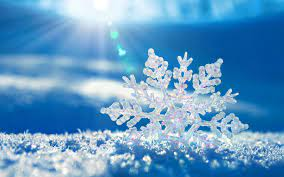
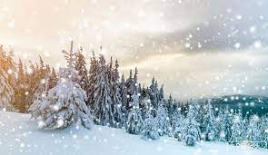
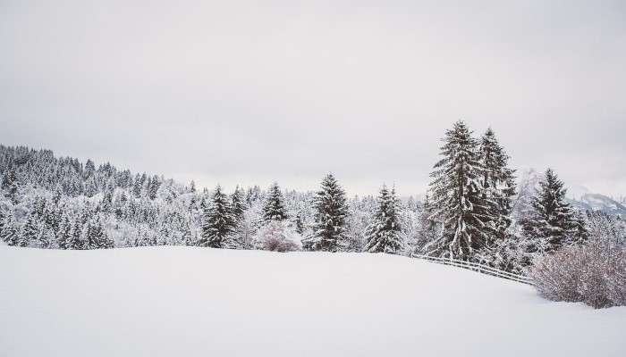
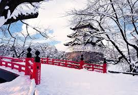

what is snow?

Snow is water solids that crystallize in the atmosphere, in the form
of white, cotton-like grains of water vapor that freeze in the air
before falling to the Earth's surface due to air temperatures below
freezing, which is 0 ℃ (Celsius) or 32 ℃ (Fahrenheit).
In short,
snow is solid precipitation in the form of ice crystals.
how is the process of snow formation

Like raindrops, snowflakes start as water vapor in the clouds.
When clouds are very cold, this water vapor turns into ice crystals.
Snow forms when small ice crystals in clouds come together into snowflakes at low temperatures and there is water vapor in the atmosphere.
Snowflakes are made up of many small ice crystals stuck together.
The crystals stick together and become heavy enough to fall to the ground.
Snowflakes falling through moist air slightly warmer than 0 ℃ (Celsius) will
melt around the edges and
stick together to produce large flakes.
four types of snow

there are 4 types of snow:
1. Snowflakes
Snowflakes are single ice crystals or groups of ice crystals that fall from clouds.
2. Snow pellets or graupel
Snow pellets or graupel are opaque ice particles in the atmosphere.
Graupel consists of snowflakes that become round, opaque pellets ranging from 2-5 millimeters (0.1-0.2 inches) in diameter.
Snow pellets form when ice crystals fall through very cold cloud droplets, which are below freezing but remain liquid.
The cloud droplets then freeze into crystals, forming a viscous mass. Graupel tends to be soft and brittle.
Graupel is sometimes mistaken for hail, but it tends to have a softer, more brittle texture.
3. Sleet
Sleet is hail consisting of raindrops or drizzle that freeze into ice as they fall, sometimes called a mixture of winter rain and snow.
Sleet is small, translucent ice balls smaller than 0.76 cm or 1.30 inches in diameter.
In some parts of the United States, the term sleet also refers to a mixture of ice pellets and freezing rain.
4. Hail
Hail tends to be larger than hailstones and usually occurs during thunderstorms,
which are more common in spring and summer than winter.
Hail forms when upward-moving or renewed air in a thunderstorm prevents pieces of graupel from falling.
Very cold water droplets hit the graupel and freeze there, causing the graupel to grow.
When the ice balls become too heavy in the upper layers to continue supporting,
they will fall as hail.
Benefits of snow and what it can do
The benefits of snow is :
Keeping heat in the ground during winter
A thick layer of snow keeps heat out of the soil under the snow.
Protects plants
Snow acts like a blanket to save plants and animals from damage caused by freezing temperatures.
Although it may be cold on the ground, snow can be a good insulator and keep heat below the ground.
Snow protects small plants from the effects of the lowest temperatures in winter.
Water supply source
Snow is a very useful source of water supply especially in hot and dry countries.
Thick layers of snow on high mountains do not melt until late spring or early summer.
When the snow melts in spring, the resulting runoff fills rivers and supplies water for irrigation and other human needs.
Recreation
Snow can be utilized as a play area. Even during the snowy winter, there are tourist attractions for vacationing.
Many children enjoy playing snowball fights with their friends or siblings,
and also many families enjoy making snowmen together and this shows how harmonious they are.
In short, snow can make many people happy.
Countries with snow season

In this world, there are many best countries for winter vacation.
There are Canada, Japan, Norway, USA, Switzerland, Antarctica, New Zealand, Austria, Chile, Argentina, Iceland,
and many more.
In indonesia, you can see snow only on the summit of mount Jayawijaya, Puncak Sumantri Brodjonegoro,
Puncak Mandala, Dieng Plateau, and Ranu kumbolo, which is on mount semeru.
but, there is only one eternal snow in indonesia, namely on the summit of mount Jayawijaya.
even reportedly, the eternal snow in indonesia, is now starting to thin out due to global warming,
and the increase in the height of the freezing point layer that exceeds the height of glacier
since the beginning of 2000 due to climate change.